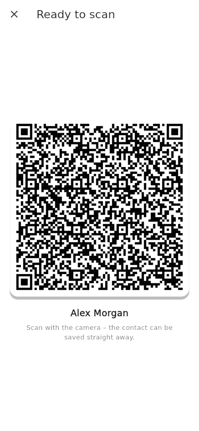
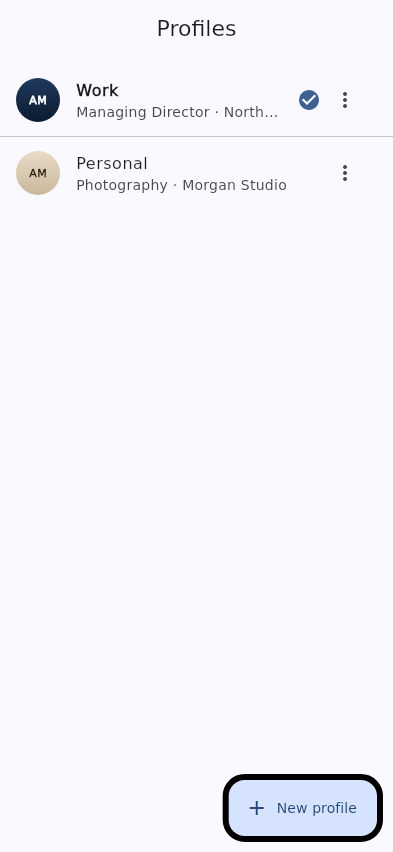
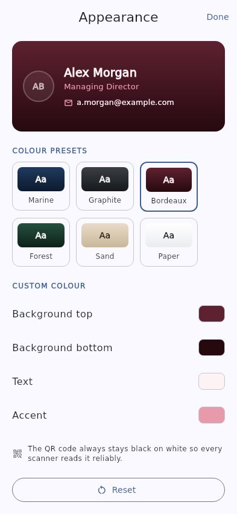

Business Card
One screen. One QR code. Fully offline.
A business card app for Android and iOS.



What it does
- Everything on one screen — no scrolling. Photo, details and QR code at a glance.
- A real vCard in the QR code — any phone camera reads it and offers to save the contact. No link, no website in between.
- Multiple profiles — work and personal side by side, switched with a swipe.
- Your own colours — background, text and accent, with six presets and a contrast check.
- Home screen widget and tap-to-share over NFC on Android.
Privacy
The app requests no network permission. It collects nothing, sends nothing and has no accounts. Everything you enter stays on your device.
Support
Questions, problems or ideas? Open an issue on GitHub — that is the fastest way to reach us and you can see what others have reported.
Prefer email? Write to BITTE-EINTRAGEN@cyb8.de.